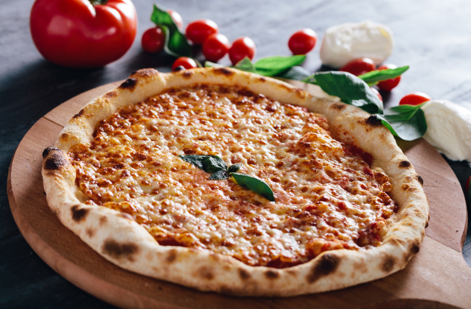

Home
Pizza Margherita

Description
A true icon of Italian cuisine. It's a simple yet perfect combination of flavors: San Marzano tomatoes, fresh mozzarella cheese, fresh basil, salt, and extra-virgin olive oil, all on a delicious pizza crust. Its origins are in Naples, and it's named after Queen Margherita of Savoy.
Ingredients
- For the Dough (basic)
- "00" flour (or all-purpose flour)
- Water
- Fresh yeast (or active dry yeast)
- Salt
- A pinch of sugar (optional, to help activate yeast)
- Extra-virgin olive oil (optional, for kneading)
- For the Topping
- San Marzano tomatoes (crushed or pureed)
- Fresh mozzarella cheese (sliced or torn)
- Fresh basil leaves
- Extra-virgin olive oil
- Salt
Instructions
- Make the Dough
- In a large bowl, dissolve the yeast and sugar (if using) in the lukewarm water. Let sit for a few minutes until frothy.
- Add the flour and salt to the bowl. Mix with a wooden spoon or your hands until a shaggy dough forms.
- Turn the dough out onto a lightly floured surface and knead for 10-15 minutes until smooth and elastic. You can add a little olive oil if it's too sticky.
- Place the dough in a lightly oiled bowl, cover with plastic wrap or a damp cloth, and let rise in a warm place until doubled in size (about 1-2 hours, or longer in the refrigerator for better flavor development).
- Prepare the Sauce
- Drain the San Marzano tomatoes and crush them by hand into a bowl. Season with a little salt and a drizzle of olive oil. That's it! Simple is best.
- Prepare the Toppings
- Tear or slice the fresh mozzarella and let it drain on paper towels to remove excess moisture.
- Wash and dry the basil leaves.
- Preheat the Oven
- If you have a pizza stone or steel, place it in the oven on the top rack. Preheat your oven to the highest possible temperature (usually 220-250°C / 430-480°F or higher if your oven goes there) for at least 30 minutes.
- Shape and Top the Pizza
- Gently punch down the risen dough. Divide it into two equal portions.
- On a lightly floured surface (using semolina or extra flour), gently stretch or press one portion of dough into a rough circle, starting from the center and working outwards. Try not to press the edges too much to create a slight rim. Avoid using a rolling pin if possible.
- Carefully transfer the dough to a pizza peel or baking sheet dusted with semolina or flour.
- Spread a thin layer of the crushed tomato sauce over the dough, leaving the edges clear.
- Distribute pieces of mozzarella evenly over the sauce.
- Add a few basil leaves.
- Drizzle with a little extra-virgin olive oil.
- Bake the Pizza
- Carefully slide the pizza onto the preheated pizza stone or baking sheet in the oven.
- Bake for 10-15 minutes, or until the crust is golden brown and the cheese is melted and bubbly.
- Finish and Serve
- Remove the pizza from the oven. Add a few fresh basil leaves immediately after baking.
- Slice and serve hot. Repeat with the second portion of dough.